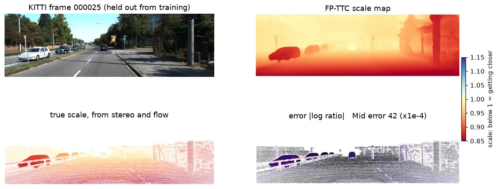

FP-TTC, measured
We ran the released FP-TTC model (12.4 M parameters, no retraining) on a 4 GB laptop GPU and measured how accurate it is, how fast it is, and whether it can give a useful time-to-collision for each car.
Model: Li et al., IEEE TCSVT 2024 · GPU: NVIDIA GeForce RTX 3050 Laptop GPU · data: KITTI scene flow (200 pairs) and nuScenes mini (394 keyframes)
Accuracy
Mid error on KITTI, by data and frame pairing
Mid error = mean |log predicted scale − log true scale| × 10,000. Predicting "nothing changes" scores 991.
Where the error sits (held-out images)
Objects are about twice as wrong as background, and they are what matters for collision.

Per-car time-to-collision
FP-TTC gives one value per pixel. To get one value per car we took the scale inside each detected car's box (YOLOv8s), matched to annotated cars on nuScenes, 1418 cars, and compared the resulting TTC with the true TTC from annotated position and velocity.
Median TTC error, seconds
| Method | Scale | TTC med. | TTC p90 |
|---|---|---|---|
| Median, whole box | 0.33% | 0.83 s | 12.3 s |
| Median, inner 70% | 0.34% | 0.87 s | 11.3 s |
| Median, inner 50% | 0.35% | 0.89 s | 11.5 s |
| Zoom fit on the flow | 22.32% | 4.59 s | 23.6 s |
A 0.3% scale error becomes about 0.9 s of TTC error, because TTC is very sensitive when the scale is close to 1.

Danger calls (TTC under 3 s)
TTC error by how close the collision really is
Small exactly where it matters, and growing for distant, slow cars. Median method, inner 70% of the box, 640×352. The 3 s threshold is our choice, not a standard.
Speed
Milliseconds per frame pair, by input size
Share of time per part (640×320)
Half the time is the backbone's transformer. The decoder holds 45% of the parameters but takes 13% of the time.
Resources
Batching does not help: two pairs at once cost the same per pair, four use 4.6 GB and get slower, eight run out of the 4 GB.
Half precision fails: switching to fp16 stops with an overflow error, so there is no easy speed-up there.
Attention runs in plain PyTorch instead of the authors' CUDA kernel, which we did not install, so its time share here is probably higher than in the paper.
What this means for the project
- Usable as a TTC sensor.On data it never saw, the per-car median is within 0.3% on scale and flags 90% of the cars truly under 3 s.
- Not real time on this laptop.About 3 frames per second end to end: fine for evaluation and demos, too slow for a live warning without changes.
- Do not use its flow output.It does not match KITTI's true flow and the flow-zoom method fails with it. The scale map works.
- Far and slow cars are unreliable.TTC error grows to about 2 s when the true TTC is 6 to 12 s, so warnings should only trust close, fast-closing cars.
- Open question.Whether a small trained head on the model's internal features beats the plain median. Not measured yet.